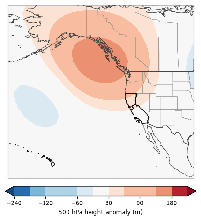

One of 6 recurring 500 hPa patterns over the eastern Pacific and western U.S. in California's fire seasons, 2001–2025 · 16% of season days

This pattern has a ridge (heights +164 m above normal) centered near British Columbia and a trough (-41 m) centered near the northeast Pacific, with higher than normal heights over California (warm, dry, sinking air).
Documented fire-weather patterns it goes with: Northern California dry thunderstorms (×1.7 as common on those days); Northern California northeast foehn winds (×2.3 as common on those days); Southern California santa ana winds (×1.7 as common on those days). How these line up with CEFA and the Synthesis of Knowledge of Extreme Fire Behavior.
Pyroconvection (23 studied California fires, 491 fire days): 5 pyroCb and 17 pyroCu days in Regime C (pyroCb days ×1.5 as common as on all study days). Which days.
The map is the average 500 hPa (~18,000 ft) height anomaly over every day assigned to this regime: red = higher than normal (ridge), blue = lower than normal (trough). Upper-level ridges bring sinking, warming, drying air; troughs bring cooler air, onshore flow and the chance of showers or thunderstorms, and the wind shifts and dry northerly flow that can follow them.
Share of each month's days (2001–2025) in Regime C.
Odds of a fire day with at least this much satellite-mapped growth, compared with the usual odds for the same time of year.
| Region | ≥1,000 ac | ≥5,000 ac | ≥10,000 ac |
|---|---|---|---|
| Northern California | ×1.20 | ×1.13 | ×1.18 |
| Southern California | ×1.05 | ×1.34 | ×1.41 |
| California | ×1.11 | ×1.17 | ×1.14 |
×1.00 = no different from usual; ×1.5 = half again as likely; ×0.6 = 40% less likely. A single 500 hPa pattern is only a modest signal on its own: lightning, wind events and fuel dryness matter a lot.
| Fire day | Acres (CA) | Largest fires that day |
|---|---|---|
| 2020-09-08 | 573,598 | NORTH COMPLEX (211,443 ac), AUGUST COMPLEX (197,534 ac), SLATER (111,099 ac) |
| 2003-10-26 | 309,959 | CEDAR (152,345 ac), SIMI (34,123 ac), PIRU (32,512 ac) |
| 2020-09-07 | 179,930 | AUGUST COMPLEX (56,713 ac), CREEK (46,288 ac), DOLAN (39,243 ac) |
| 2020-09-05 | 151,085 | CREEK (113,545 ac), AUGUST COMPLEX (12,664 ac), EL DORADO (7,989 ac) |
| 2003-10-25 | 147,290 | SIMI (53,810 ac), CEDAR (28,353 ac), GRAND PRIX (25,763 ac) |
| 2018-11-08 | 130,279 | CAMP (102,838 ac), WOOLSEY (22,773 ac), HILL (4,386 ac) |
| 2020-09-09 | 113,864 | AUGUST COMPLEX (49,537 ac), SLATER (20,245 ac), NORTH COMPLEX (10,798 ac) |
| 2003-10-27 | 97,088 | CEDAR (33,537 ac), PIRU (16,200 ac), PARADISE (14,629 ac) |
| 2003-10-28 | 92,173 | CEDAR (49,671 ac), OLD (19,062 ac), PIRU (11,335 ac) |
| 2018-11-09 | 82,953 | WOOLSEY (70,395 ac), CAMP (12,449 ac), EDEN (49 ac) |
| 2020-09-06 | 72,392 | CREEK (19,674 ac), AUGUST COMPLEX (14,742 ac), BOBCAT (10,727 ac) |
| 2018-07-27 | 68,646 | CARR (45,591 ac), RIVER (MENDOCINO COMPLEX) (7,566 ac), WHALEBACK (6,711 ac) |
5 of the study's 13 pyroCb days formed under Regime C:
PyroCu (fire-rooted tops −20 to −40 °C) under Regime C: 17 days (August Complex, Bobcat, Carr, Castle (SQF Complex), Creek, Dixie, Mosquito, North Complex, Park).
Median 700 hPa moisture at the fire: 3.9 g/kg on pyroCb days, 2.7 g/kg on days with no deep plume cloud.
Under A, C or D, 700 hPa moisture at or above ~3.6 g/kg marked every studied pyroCb day (12/13) while flagging 101/348 days without deep plume cloud (fire by fire: 11/13 caught, 123/402 flagged). A pattern-level hint, weaker than the fire-power test on the pyroconvection page.
23 studied California fires (2018–2024), GOES-classified and reviewed by eye. Pyroconvection under the scenarios.
% of all members (models weighted equally) in Regime C, by day.
| 10/24 | 10/25 | 10/26 | 10/27 | 10/28 | 10/29 | 10/30 | 10/31 | 11/01 | 11/02 | 11/03 | 11/04 | 11/05 | 11/06 | 11/07 |
|---|---|---|---|---|---|---|---|---|---|---|---|---|---|---|
| 100 | 20 | 11 | 0 | 0 | 0 | 0 | 3 | 5 | 8 | 9 | 9 | 5 | 4 | 5 |